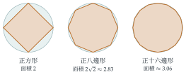

STEP III 2022，第 4 題
繼續之前，請先閱讀題目（原題為英文）。題目載於 OCR 提供下載的 2022 年 STEP 試卷（zip 檔案）內的 STEP III 試卷： www.ocr.org.uk/Images/696587-2022-past-papers.zip
引子
這道題的最後一行，是數學中最優美的公式之一，也是同類公式中最古老的一條。它由法國律師兼數學家韋達（François Viète）於 1593 年發表，是歷史上第一次有人把 \(\pi\) 準確地寫成一個無窮過程的結果。在韋達之前，\(\pi\) 只能求近似值；在他之後，它可以用一條公式來定義，只要一直算下去，就能得出每一個數位。
這條公式看來很神祕：一層套一層的 \(2\) 的平方根，即嵌套平方根（nested square roots），究竟從何而來？這道題揭示，它其實來自反覆運用倍角公式（double-angle formula），而且同一套方法還順道得出另一條名氣較小的公式，是關於 \(\ln 2\) 的。
動筆之前
\(\sinh\) 的倍角公式是甚麼？（如果不肯定，可把 \(\sinh 2y\) 和 \(\sinh y \cosh y\) 用指數函數寫出來，再作比較。）
\(\sinh 2y = 2\sinh y\cosh y\)，與 \(\sin 2y = 2\sin y\cos y\) 完全一樣。整道題就是靠反覆運用這一條恆等式（identity）來推動的。題目一直使用雙曲函數（hyperbolic functions），到最後一部分我們才轉用普通的三角函數。
逐步解題
階段 1 反覆減半
\(n = 1\) 的情況就是取 \(y = x/2\) 的倍角公式： \[\sinh x = 2\cosh\left(\frac{x}{2}\right)\sinh\left(\frac{x}{2}\right).\]
假設公式對 \(n\) 成立。最後一個因子是 \(\sinh(x/2^n)\)。怎樣改寫它，才能得到 \(n + 1\) 時的公式？
對它運用倍角公式：\(\sinh(x/2^n) = 2\cosh(x/2^{n+1})\sinh(x/2^{n+1})\)。代入後得 \[\sinh x = 2^{n+1}\cosh\left(\frac{x}{2}\right)\cdots\cosh\left(\frac{x}{2^n}\right)\cosh\left(\frac{x}{2^{n+1}}\right)\sinh\left(\frac{x}{2^{n+1}}\right),\] 這正是 \(n + 1\) 時的公式。根據歸納法（induction），公式對所有 \(n\) 成立。■
至於隨後的推論，先把兩邊除以 \(x\)，再把兩邊乘以 \(\dfrac{x/2^n}{\sinh(x/2^n)}\)。在右邊，\(2^n \sinh(x/2^n) \cdot \dfrac{x/2^n}{x\,\sinh(x/2^n)} = 1\)，只剩下各個 cosh 項的乘積。■
階段 2 極限
由級數（series）可知，當 \(y \neq 0\) 時， \[\frac{\sinh y}{y} = 1 + \frac{y^2}{3!} + \frac{y^4}{5!} + \cdots,\] 當 \(y \to 0\) 時它趨向 \(1\)，所以它的倒數 \(y/\sinh y\) 也趨向 \(1\)。（如果想嚴謹一點：尾部 \(\frac{y^2}{3!} + \frac{y^4}{5!} + \cdots\) 中的每個階乘都至少是 \(6\)，所以當 \(0 < |y| < 1\) 時，尾部至多是 \(\frac{1}{6}\bigl(y^2 + y^4 + \cdots\bigr) = \frac{y^2}{6(1-y^2)}\)，而這個量趨向 \(0\)。）
現在固定 \(x\)，在第 (i) 部分中令 \(n \to \infty\)。這時 \(y = x/2^n \to 0\)，所以左邊趨向 \(\dfrac{\sinh x}{x} \times 1\)。右邊是部分積（partial product），因此它也趨向 \(\dfrac{\sinh x}{x}\)。這正是無窮乘積（infinite product）的意思。■
階段 3 \(\ln 2\) 的公式
取 \(x = \ln 2\)，則 \(e^{x/2} = \sqrt2\)，所以 \[\cosh\left(\frac{x}{2}\right) = \frac{2^{1/2} + 2^{-1/2}}{2} = \frac{2 + 1}{2\sqrt2} = \frac{3}{2\sqrt2}.\] 同樣地，\(e^{x/4} = 2^{1/4}\)，所以 \(\cosh(x/4) = \dfrac{2^{1/4} + 2^{-1/4}}{2}\)，把分子和分母同乘以 \(2^{1/4}\)，便得 \(\dfrac{2^{1/2} + 1}{2 \times 2^{1/4}}\)。■
\(\cosh(x/2^k)\) 的一般規律是甚麼？把所有分母 \(2 \times 2^{1/2^k}\) 乘在一起，會有甚麼結果？
同樣的計算顯示，對每個 \(k \geq 1\)， \[\cosh\left(\frac{x}{2^k}\right) = \frac{1 + 2^{1/2^{k-1}}}{2} \times 2^{-1/2^k}.\] （當 \(k = 1\) 時，這就是 \(\frac{1 + 2}{2} \times 2^{-1/2} = \frac{3}{2\sqrt2}\)，與前面一致。）對 \(k = 1, 2, 3, \ldots\) 連乘，\(2\) 的各個冪合併成 \(2^{-(1/2 + 1/4 + 1/8 + \cdots)} = 2^{-1}\)，而第一個分數是 \(\frac{1+2}{2} = \frac32\)。所以這個無窮乘積是 \[\frac32 \times \frac12 \times \frac{1 + 2^{1/2}}{2} \times \frac{1 + 2^{1/4}}{2} \times \frac{1 + 2^{1/8}}{2} \cdots.\] 另一邊，\(\sinh(\ln 2) = \frac{2 - \frac12}{2} = \frac34\)，所以 \(\dfrac{\sinh x}{x} = \dfrac{3}{4\ln 2}\)。兩邊的因子 \(\frac34\) 互相約去，剩下 \[\frac{1}{\ln 2} = \frac{1 + 2^{1/2}}{2} \times \frac{1 + 2^{1/4}}{2} \times \frac{1 + 2^{1/8}}{2} \cdots. \qed\]
階段 4 韋達公式
第 (iv) 部分含有 \(\pi\)，所以它必定來自普通的三角函數，而不是雙曲函數。如果把 \(\sinh\) 和 \(\cosh\) 換成 \(\sin\) 和 \(\cos\)，第 (i) 和第 (ii) 部分的一切是否仍然成立？
仍然成立。歸納法只用到倍角公式，而 \(\sin 2y = 2\sin y\cos y\)。極限只用到當 \(y \to 0\) 時 \(\frac{\sin y}{y} \to 1\)，這可以用同樣的方法由 \(\sin y = y - \frac{y^3}{3!} + \cdots\) 推出。所以當 \(x \neq 0\)（並且 \(x\) 不是 \(\pi\) 的倍數，以確保過程中沒有因子為零）時， \[\frac{\sin x}{x} = \cos\left(\frac{x}{2}\right)\cos\left(\frac{x}{4}\right)\cos\left(\frac{x}{8}\right)\cdots.\]
選取 \(x\) 使左邊等於 \(2/\pi\)，然後算出最初幾個因子。半角公式（half-angle formula）\(\cos\frac{\theta}{2} = \sqrt{\frac{1 + \cos\theta}{2}}\)（適用於 \(0 \leq \theta \leq \pi\)）會派上用場。
取 \(x = \frac{\pi}{2}\)。這時 \(\frac{\sin x}{x} = \frac{1}{\pi/2} = \frac{2}{\pi}\)，而各因子是 \(\cos\frac\pi4, \cos\frac\pi8, \cos\frac{\pi}{16}, \ldots\)。第一個是 \(\cos\frac\pi4 = \frac{\sqrt2}{2}\)。如果某個因子是 \(\cos\theta = \frac{c}{2}\)，由半角公式可知下一個因子是 \[\cos\frac{\theta}{2} = \sqrt{\frac{1 + c/2}{2}} = \frac{\sqrt{2 + c}}{2}.\] 所以分子依次是 \(\sqrt2\)、\(\sqrt{2 + \sqrt2}\)、\(\sqrt{2 + \sqrt{2 + \sqrt2}}\)、…，每一個都是把前一個加上 \(2\) 再開平方而得。這就是韋達公式。■
回顧
乘積的相消（telescoping）。第 (i) 部分的恆等式是一個會收攏的乘積，正如某些和式可以裂項相消一樣。
先有有限的恆等式，再取極限。與 第 2.4 節 一樣，每一步對有限的 \(n\) 都是準確的，唯一需要的極限就是非常簡單的 \(\frac{\sin y}{y} \to 1\)。
雙曲函數與圓函數是孿生兄弟。同一個證明對兩者都適用，因為兩者滿足相同的倍角公式和相同的小角極限。這並非巧合：\(\cosh(\mathrm{i}x) = \cos x\)，你會在 第 5.7 節 看到。
背後的數學
韋達公式有一個幾何意義，可追溯至阿基米德。內接（inscribed）於半徑為 \(1\) 的圓的正 \(2^n\) 邊形，面積是 \(A_n = 2^{n-1}\sin\frac{2\pi}{2^n}\)。把邊數加倍，面積就乘以 \[\frac{A_{n+1}}{A_n} = \frac{2^n \sin(\pi/2^n)}{2^{n-1}\cdot 2\sin(\pi/2^n)\cos(\pi/2^n)} = \frac{1}{\cos(\pi/2^n)}.\] 由正方形（\(A_2 = 2\)）開始，不斷把邊數加倍，面積便趨向圓的面積 \(\pi\)。所以 \(\pi = 2 \div \bigl(\cos\frac\pi4 \cos\frac\pi8 \cos\frac{\pi}{16}\cdots\bigr)\)，這正是韋達公式。乘積中的每個因子，都是圖 2.5.1 中相鄰兩個多邊形的面積之比。

無窮乘積
韋達乘積是數學史上第一個無窮乘積。其後陸續有其他例子：沃利斯（John Wallis）在 1655 年發現 \(\frac{\pi}{2} = \frac{2}{1}\cdot\frac{2}{3}\cdot\frac{4}{3}\cdot\frac{4}{5}\cdot\frac{6}{5}\cdot\frac{6}{7}\cdots\)，而歐拉（Euler）關於 \(\frac{\sin x}{x}\) 的乘積已在 第 2.4 節 出現過。到了大學，你會學到無窮乘積在甚麼情況下收斂（converge）。粗略地說，當 \(\prod(1 + a_n)\) 中的 \(a_n\) 是細小的正數時，它的表現與 \(\sum a_n\) 相似，因為 \(\ln(1 + a_n) \approx a_n\)。這裏 \(1 - \cos(\pi/2^n) \approx \frac12(\pi/2^n)^2\)，每次縮小 \(4\) 倍，所以這個乘積收斂得很快。
有多快？
乘了 \(n\) 個因子之後，部分積恰好等於 \(\dfrac{1}{2^n\sin(\pi/2^{n+1})}\)，其誤差大約是 \(\frac{\pi^2}{6 \cdot 4^{n+1}}\) 乘以 \(\frac2\pi\)。每多一個因子，答案的準確度大約提高 \(4\) 倍，即多得大約 \(0.6\) 個小數位。十個因子可使 \(2/\pi\) 準確至六個小數位。這已經不錯，但遠遠不及 第 2.6 節 的方法那麼快，那些方法每一步都令準確的位數加倍。
思維技巧
一條把 \(f(x)\) 與 \(f(x/2)\) 聯繫起來的恆等式，可以一次又一次地運用；取極限之後，結果往往是一個無窮和或無窮乘積。
找出 \(n\) 步之後的「餘項」（這裏是 \(2^n\sinh(x/2^n)\)），然後另行求出它的極限。這個模式在分析學中隨處可見，由無窮乘積以至分形（fractals）的構造都有它的蹤影。
延伸練習
1990 年的版本。試做 STEP I 1990，第 8 題。它循一條與本節不同的途徑得出韋達乘積，所用的不外乎 \(\sin\) 的倍角公式。你覺得哪一種方法較為自然？
另一個角。在 \(\frac{\sin x}{x}\) 的乘積中取 \(x = \frac{\pi}{3}\)，把 \(\frac{3\sqrt3}{2\pi}\) 寫成無窮乘積，並化簡最初兩個因子。
要多少個因子？用計算機找出韋達乘積需要多少個因子，才能使 \(\pi\) 準確至 \(4\) 個小數位。解釋為甚麼每多一個因子大約多得 \(0.6\) 個數位。
\(\ln 3\) 的公式。取 \(x = \ln 3\) 重做第 (iii) 部分，把 \(\frac{1}{\ln 3}\) 寫成無窮乘積。需要多少個因子才能使 \(\frac{1}{\ln 3}\) 準確至兩個小數位？為甚麼這個乘積收斂得比韋達乘積慢？
延伸閱讀
Petr Beckmann, A History of \(\pi\)（St Martin’s Press）。阿基米德、韋達、沃利斯等人的故事，寫得興味盎然。
Jonathan Borwein & Peter Borwein, Pi and the AGM（Wiley）。關於計算 \(\pi\) 的嚴謹數學，包括 第 2.6 節 的方法。讀完本章之後，第 1 章應該讀得懂。
Eli Maor, Trigonometric Delights（Princeton University Press）。書中有一章專門講述韋達和他的乘積。